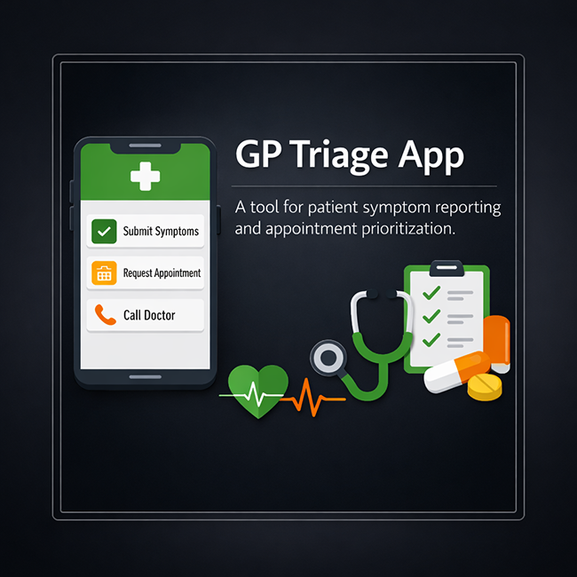
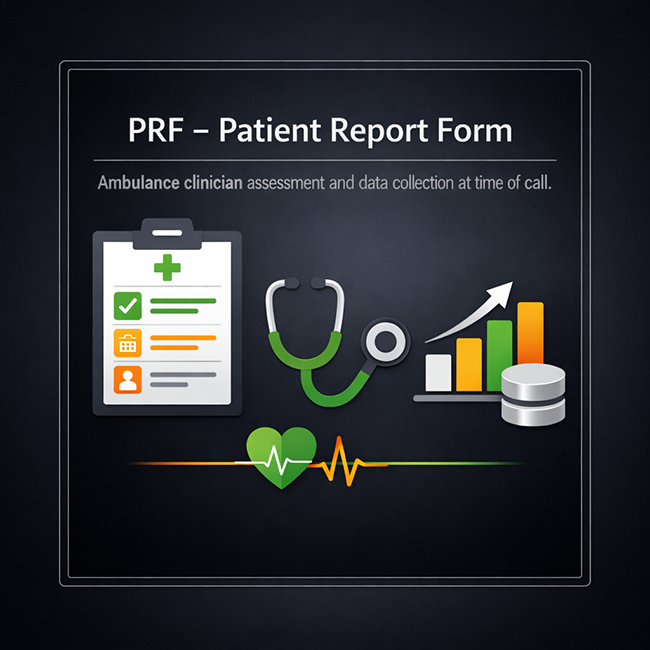
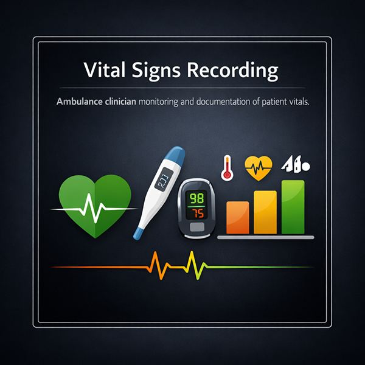
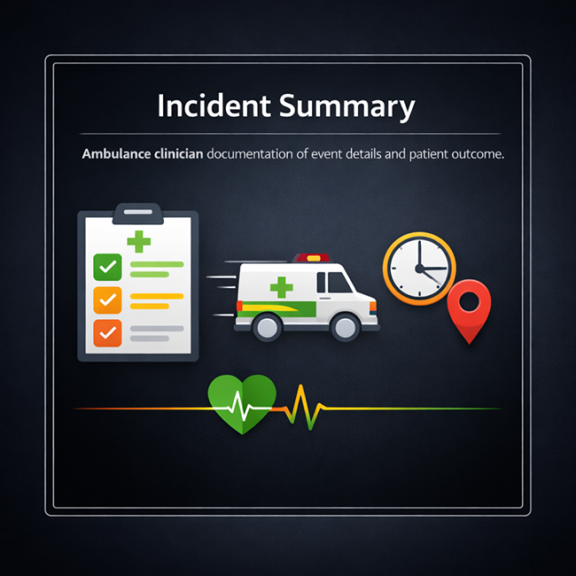
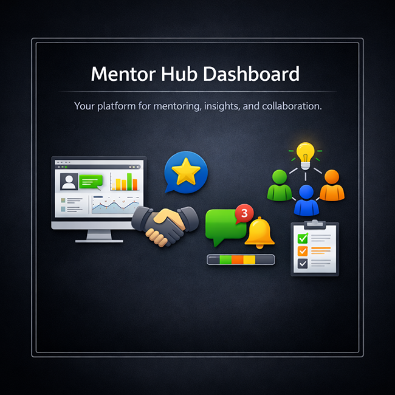

GP Triage App
Draft app to support GP triage and symptom priority. The concept helps direct routine, urgent, and emergency pathways while supporting clinicians with structured intake data.
Draft concepts, upcoming projects, and placeholders for the next builds.
This page is ready for ideas under development. Each card is a new work stream, experiment, and upcoming portfolio entry.

Draft app to support GP triage and symptom priority. The concept helps direct routine, urgent, and emergency pathways while supporting clinicians with structured intake data.



Digital patient report form for ambulance clinicians. Designed for ambulance staff to record presenting complaint, full assessment findings, observations, vital sign readings, medical history, medications, treatments provided, and medication administration details in one structured PRF workflow.

Planned backend service for project and profile data. It will expose reusable endpoints for cards, project metadata, and dynamic content updates across portfolio pages.

Early concept for guided mentoring and course tracking. Planned features include learner goals, session notes, progress checkpoints, and curated follow-up resources.